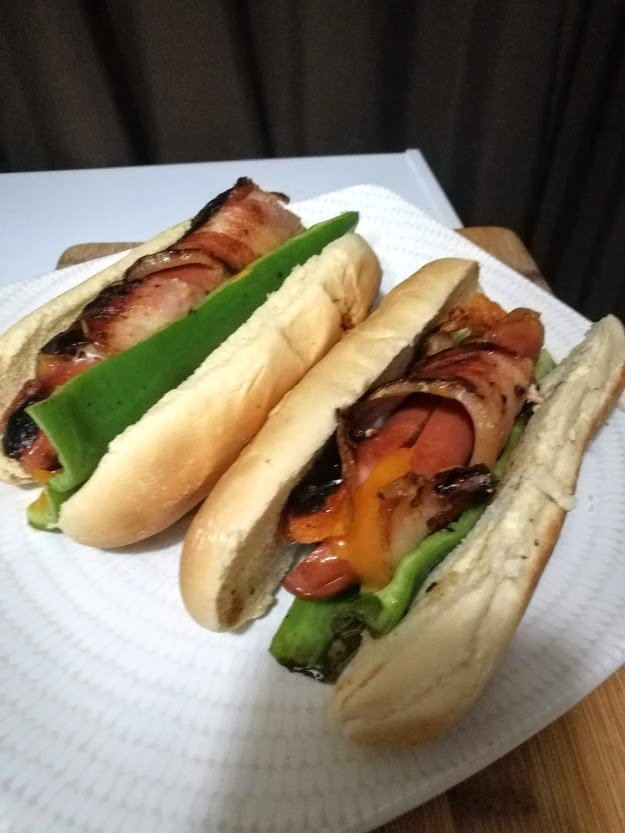

Home
Ravager Dogs

Description
A delicatessen of the Laughing Skull Orcs down in Gogrond. These rough but tasty morsels will satisfy even the burliest plain warriors appetite.
Ingredients
- Ravager Dogs (can subsitute any sausage)
- Cheese (recommend sharp cheddar but any strong cheese would be good)
- 2 large peppers (gorgrond, dalapeno or anaheim)
- One strip bacon per dog
- One bun per dog. You could probably also use a a wrap or tortilla
Instructions:
- Slice the links in half.
- Using about a 1-2mm slice, stuff the links and reform.
- Wrap the suffed links with bacon and secure them(CAREFULLY)with spikes.
- Cook the wrapped links on all sides until the bacon is crisped and the cheese is melty.
- Set the links inside on half of the seeded peppers and return to the pan.
- Cook until the bottom of the pepper is charred.
- Move to buns and remove the spikes. All of them!
- Add whatever condiments you like and enjoy!